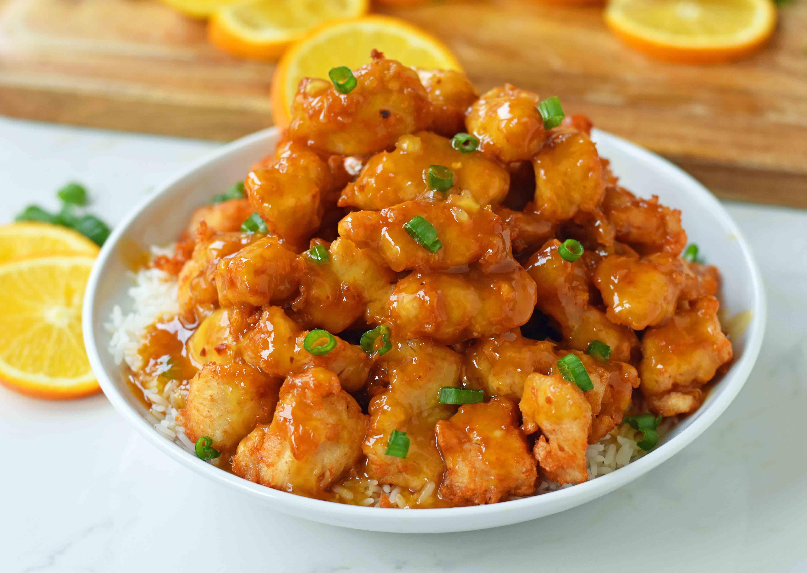

Orange Chicken

Ingredients
Chicken
- Four boneless skinless chicken breasts cut into bite-size pieces
- Three eggs whisked whisked
- One-third cup cornstarch
- One-thid cup flour
- Salt
- Oil for frying
Orange Chicken Sauce
- One cup orange juice
- One half cup sugar
- Two tablespoons rice vinegar or white vinegar
- Two tablespoons soy sauce use tamari for a gluten-free dish
- One quarter teaspoon ginger
- One quarter teaspoon red chili flakes
- Orange Zest from one orange
- One tablespoon cornstarch
Garnish
Steps
To Make Orange Sauce
- In a medium pot, add orange juice, sugar, vinegar, soy sauce, ginger, garlic, and red chili flakes. Heat for three minutes
- In a small bowl, whisk one tablespoon of cornstarch with two tablespoons of water to form a past. Add to orange sauce and which together. Continue to cook for five minutes, until the mixture begins to thicken. Once the sauce is thickened, remove from heat and add orange zest.
To Make Chicken
- Place flour and cornstarch in a shallow dish or pie plate. Add a generous pinch of salt. Stir.
- Whisk eggs in a shallow dish.
- Dip chicken pieces in egg mixture and then flour mixture. Place on plate.
- Heat two-three inches of oil in a heavy-bottomed pot over medium-high heat. Using a thermometer, watch for it to reach 350 degrees.
- Working in batches, cook several chicken pieces at a time. Cook for two-three minutes, turning often until golden brown. Place chicken on a paper towel-lined plate. Repeat
- Toss chicken with orange sauce. You may reserve some of the sauce to place on rice. Servce it with a sprinkling of green onion and orange zest, if so desired.